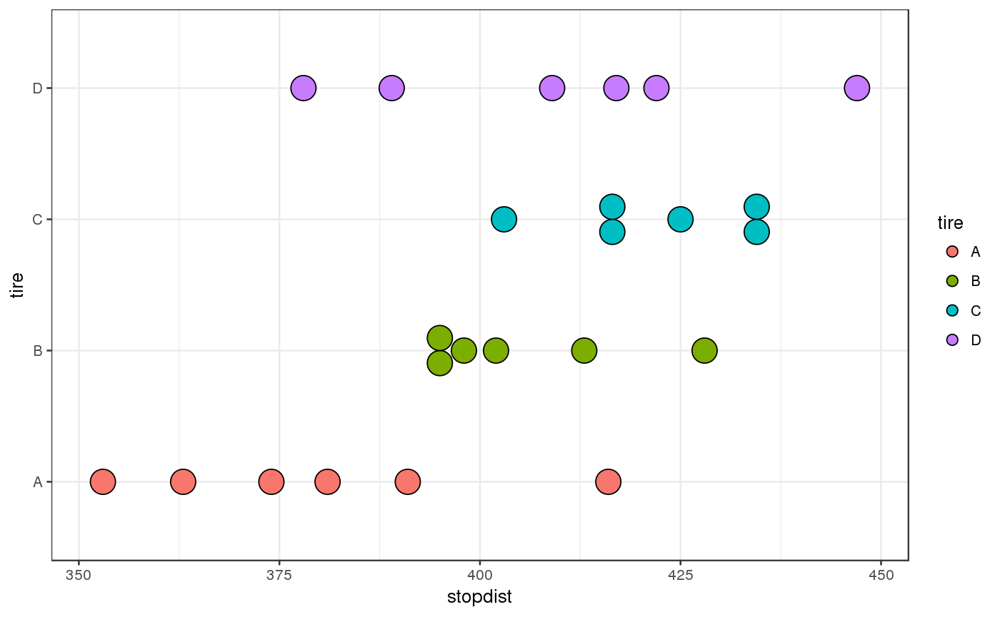
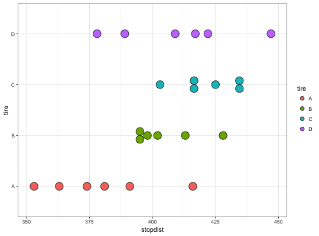
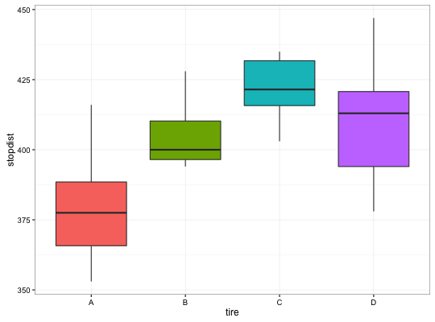

Function to create dotplots, boxplots, and design plot (means) for single factor designs
oneway.plots(Y, fac1, COL = c("#A9E2FF", "#0080FF"))
with(data = TIRE, oneway.plots(stopdist, tire))## Similar graphs with ggplot2 ggplot(data = TIRE, aes(tire, stopdist, fill = tire)) + geom_dotplot(binaxis = "y", stackdir = "center") + coord_flip() + theme_bw()`stat_bindot()` using `bins = 30`. Pick better value with `binwidth`.ggplot(data = TIRE, aes(tire, stopdist, fill = tire)) + geom_boxplot() + guides(fill = FALSE) + theme_bw()